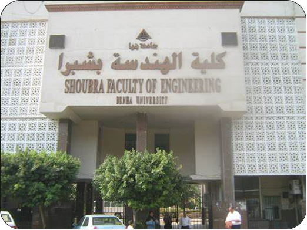

البداية

بدأت الدراسة في قسم الهندسة الكهربية والذي أنشئ منذ إنشاء الكلية عام 1961 في المبنى الكائن في روض الفرج.
وفي عام 1980 تم إنشاء شعبتين هما: شعبة هندسة الإلكترونيات والاتصالات وشعبة هندسة القوي والآلات الكهربية .
وفي عام 1997/1998 تم إضافة شعبة ثالثة وهي شعبة هندسة نظم الحاسب وتقع تحت مظلة قسم الهندسة الكهربية ويبدأ التخصص فيها من الفرقة الثالثة.
انتقلت الشعبة مع القسم الى المبنى الجديد في الخلفاوي عام 2008 حيث قاعات المحاضرات الفسيحة والمعامل المتعددة والتجهيزات الحديثة.